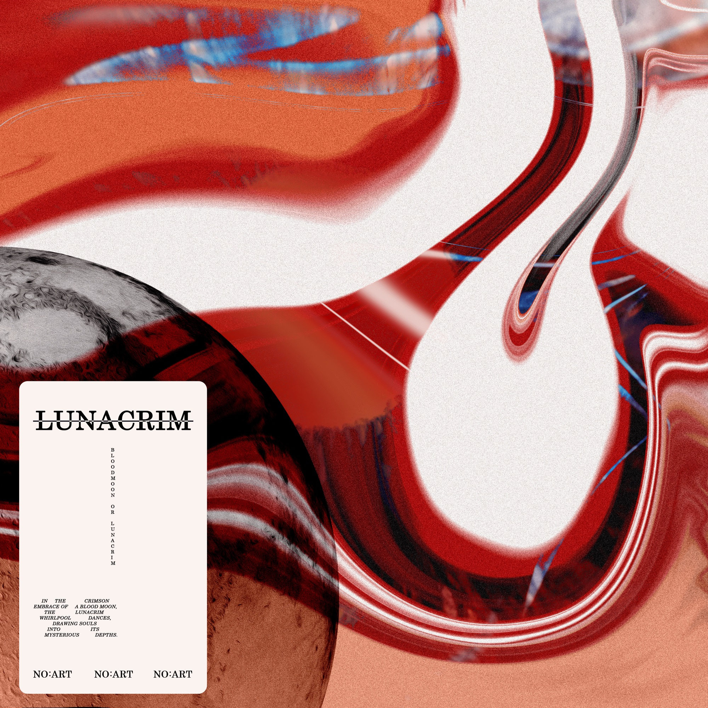

(À propos)
Lunacrim — No:Art.
(Détails)
- Artiste
- No:Art — Jean-Christophe Zephir
- Type
- Single
- Année
- 2024
- Rôle
- Composition, production, mixage
(Le projet)
Single produit sous le nom No:Art. Appuie sur lecture pour faire tourner le disque.

Lunacrim — No:Art.
Single produit sous le nom No:Art. Appuie sur lecture pour faire tourner le disque.